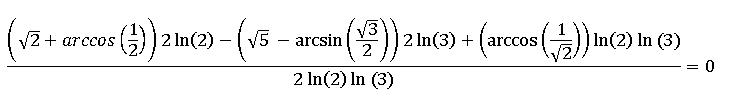

Parcial 1 - Bayron Ocampo Vargas 2116612

Procesar
Tipo de Error
Totales
Porcentaje
Total de errores de arcoseno
Total de errores de arcocoseno
Total de errores de raíz cuadrada
Total de errores de división
Total de errores de logaritmo natural